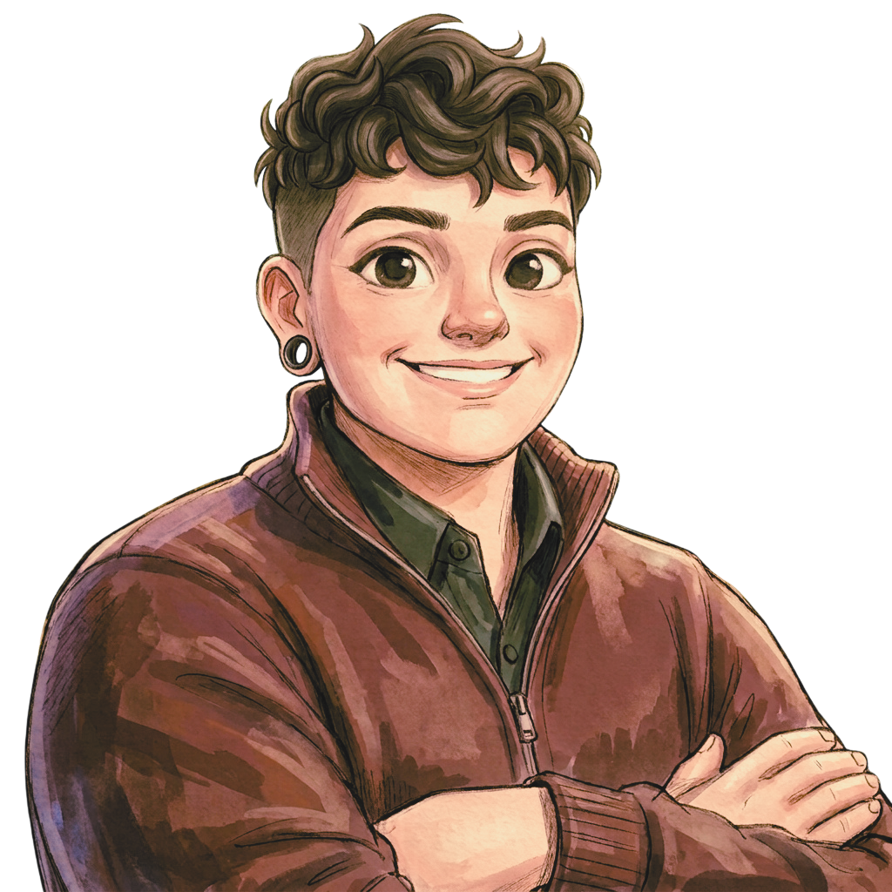
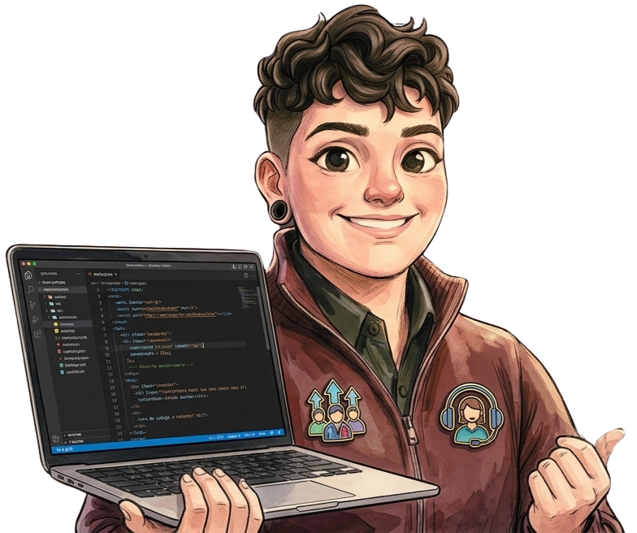

Portfólio pessoal
Um espaço para reunir minha trajetória, meus conhecimentos e meus projetos.
✦ CONCLUÍDO ✦
Oi, eu sou
Coordenadora de Atendimento e uma Entusiasta de Tecnologia
Vamos nos conectar?
Um pouco sobre mim

Meu nome é Leticia Amaral e sou apaixonada por pessoas, tecnologia e pelas possibilidades que surgem quando essas duas áreas se encontram.
Sou formada em Redes de Computadores e comecei minha trajetória profissional em Help Desk. Foi nesse contato com a tecnologia e com as pessoas que descobri meu interesse pela gestão, pela experiência do cliente e pelo desenvolvimento de equipes.
Hoje, como Coordenadora de Atendimento, busco unir essas experiências para construir processos mais eficientes, desenvolver pessoas e encontrar soluções que façam a diferença no dia a dia. Acredito que a tecnologia tem ainda mais valor quando simplifica a rotina, aproxima pessoas e transforma experiências.
Estou sempre em busca de novos aprendizados e desafios que me permitam conectar tudo isso de maneiras diferentes.
Fora do trabalho: Gosto de ouvir um bom LP e curtir shows. MPB e rock têm espaço garantido no meu coração!
O que estou construindo
Ideias, soluções e experiências que estão ganhando forma. Alguns projetos já estão em andamento; outros estão quase prontos para sair do papel.
Um espaço para reunir minha trajetória, meus conhecimentos e meus projetos.
Aplicativo para organizar receitas e despesas, acompanhar os gastos e ter mais clareza sobre a vida financeira.
Sistema desenvolvido com Google Apps Script para que funcionários façam login e consultem seus resultados.
Uma nova ideia está sendo preparada para ganhar vida.
Novas possibilidades e aprendizados estão no radar.
Este espaço será preenchido por uma próxima iniciativa.
Conhecimentos e experiências
Ferramentas, dados, pessoas e novas possibilidades. Um repertório construído na prática e ampliado continuamente pela curiosidade.
Tecnologia para organizar, atender e evoluir processos.
Acompanhamento de resultados e identificação de oportunidades.
Desenvolvimento, acompanhamento e crescimento de equipes.
Explorando tecnologia, automação e desenvolvimento.
Passe o mouse ou toque em uma habilidade para saber mais.